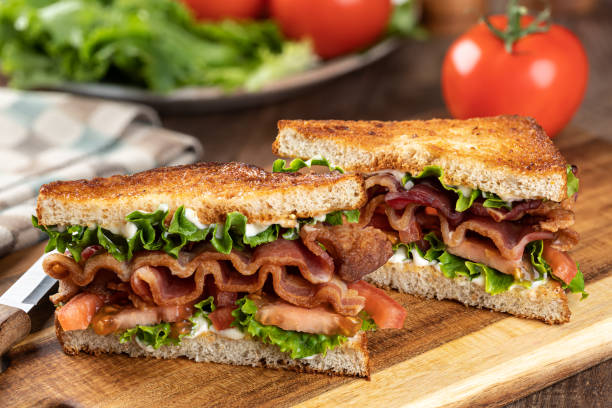

BLT

BLT
Description
The BLT is an American staple and can
be made with very simple ingredients. The signature of this dish is simple but amazing.
Follow along to fulfill your hunger in a few minutes!
Ingredients
- 4 slices of bacon
- lettuce
- 2 slices of tomato
- 2 slices bread, toasted
- 1 tablespoon mayonnaise
Steps
- Gather all ingredients
- Cook bacon on skillet until crispy
- Arrange the bacon, lettuce, and tomato slices on a loaf of bread
and mayo on the other slice
- Close the sandwich and enjoy!